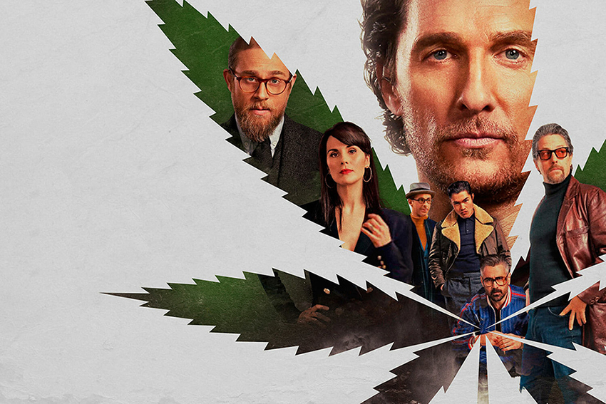
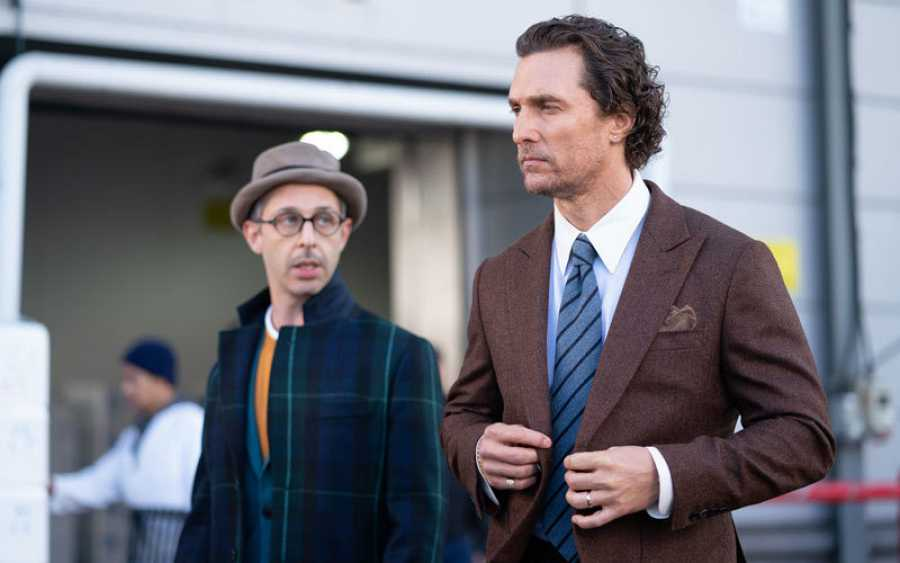
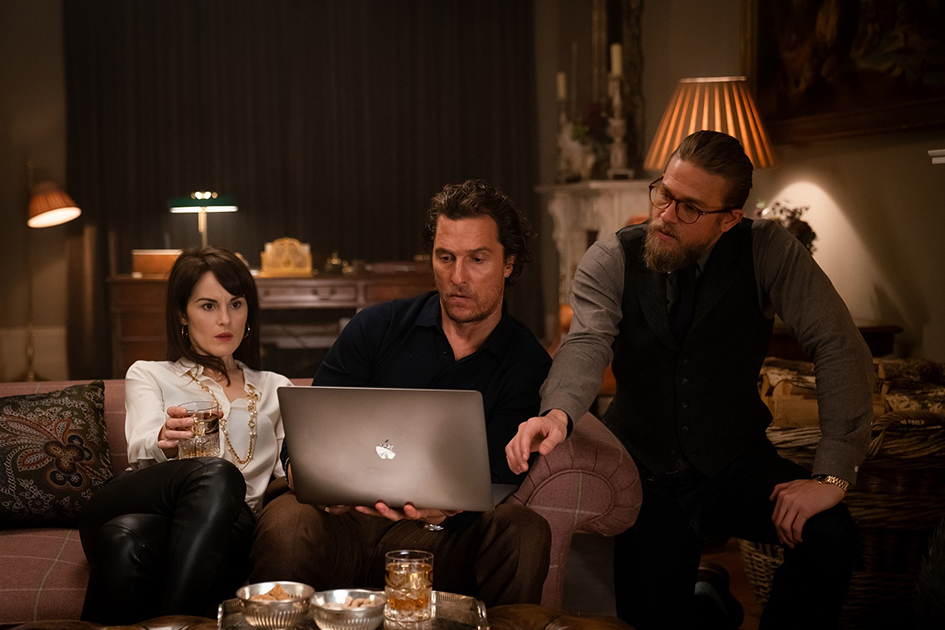
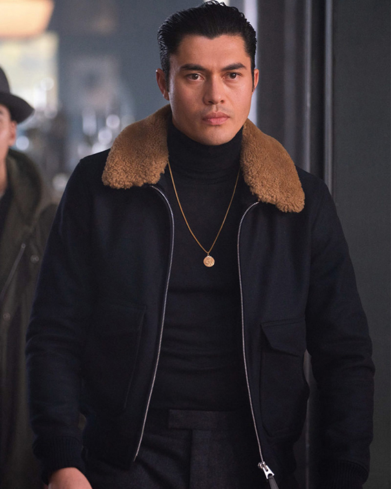
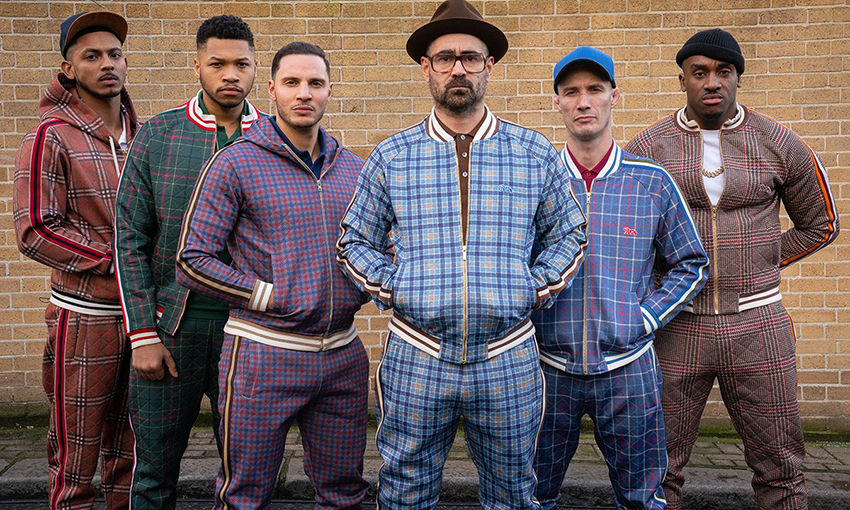

CRÍTICA
Ya hasta parece novedad que en el cine reciente una película comience con los créditos, a menos que sea una tradición o una convención propia del género como cualquiera de la saga del Agente 007. Lo hace ahora Guy Ritchie en su reciente largometraje The Gentlemen, los señores de la mafia con una introducción de fotogramas de sus personajes difuminados por armas humeantes –como el título de su película debut, Lock, Stock and Two Smoking Barrels (1998)- aderezada con el tema de Cumberland Gap, de David Rawlings.
Un inicio peculiar para lo que pudiera ser el film que consolide a Guy Ritchie como un buen director. De vuelta a aquel estilo de Snatch, Cerdos y Diamantes (2000), que nos inserta al igual que su predecesora en los escondrijos del británico ambiente criminal con personajes burdos pero auténticos, humor negro y montajes vertiginosos que le han dado el estilístico toque de la casa a su filmografía.
Con este par de trabajos, el ahora director, productor y guionista británico Guy Ritchie marcó un estilo propio de historias con cabos sueltos que convergen en medio de la sátira. En el camino se ha encontrado en dos ocasiones con la nueva adaptación al cine del detective inglés Sherlock Holmes (2009) y Sherlock Holmes, Juego de Sombras (2011), películas igual de amadas y odiadas, porque hay a quienes les encanta su artificio con las cámaras, pero hay quien tampoco lo soporta.
Ritchie siguió con más adaptaciones. De la mano del actor Charlie Hunnam realizó una épica, pero fantasiosa versión, de Rey Arturo: la Leyenda de Exacalibur (2017) que no tuvo un buen recibimiento, y después asumió el reto de llevar a la realidad una de las populares películas animadas de Disney, Aladdin (2019), en la que, sin abusar de sus montajes, y con buenos gags, secuencias de acción y efectos especiales, consiguió una de las mejores adaptaciones live action de esa casa productora.
Después de este paseo por la industria hollywoodense, Ritchie vuelve a la vieja usanza. A meternos en los ambientes criminales de los suburbios londinenses con sus héroes y villanos y sus historias retorcidas que nos llenan de anécdotas que convergen al final en una sola historia.
Así conocemos a Mickey Pearson (Mathew McConaughey), un tipo egresado de la Universidad de Oxford en Norteamérica, que llegó a Londres a construir un imperio de granjas de marihuana instaladas bajo las mansiones de las clases burguesas. “Si quieres ser el Rey de la Selva no debes actuar como León, sino ser el León”, dice una de sus líneas.
Sin embargo, Mickey y su esposa Rosalind (Michelle Dockery) quieren pasar más tiempo juntos, desean retirarse del negocio y vender el imperio al mejor postor. Ahí entra Mathew Berger (Jeremy Strong), un tipo millonario, desconfiable y presuntuoso, dispuesto a negociar, pero a bajar el precio de las granjas. Al ventilarse la noticia de que quiere vender, surge otro comprador potencial de nombre Dry Eye (Henry Golding), un tipo joven y elegante al estilo de un James Bond asiático.
La historia se complica cuando un grupo de adolescentes afroamericanos con una increíble destreza para pelear y aficionados a grabarse cometiendo atrocidades para subirlas a YouTube, asaltan, sin saber, una de las granjas de Mickey Pearson. Así que ahora, el conocido como Entrenador (Colin Farrell), un personaje de trajes a cuadro, bombín y anteojos, quien buscará resarcir los daños, negociando con Raymond (Charlie Hunnam), el tipo duro de Pearson.
Todo se vuelve un cúmulo de intrigas, traiciones y de sangre bañando los tarros de cerveza. Pero con un toque estético y elegante. Ya no hay caricaturas, animaciones ni transiciones hilarantes, Guy Ritchie impone su estilo de una forma más madura y menos satírica. Ya no abusa de su costumbre de acelerar las escenas de montaje, sino que las deja fluir con música estruendosa, con planos entre vómitos, gritos, armas, amenazas y fuego.
Ritchie no se estanca, sino evoluciona, y sin hacer calca de sus primeros filmes tampoco se abandona. El eje de esta historia es Fletcher (Hugh Grant) un remedo de inspector y periodista que presume haber seguido y fotografiado las andanzas del tal Pearson, las cuenta a manera de guion de película a Raymond, para chantajearlo. Lo amenaza con revelar su información al dueño de una editorial, a cambio de dinero para producir una película –en Miramax, por cierto- algo así como el cine dentro del cine.
Volvieron los gitanos, rusos y judíos, en medio de una narrativa contada con destreza y habilidad, con líneas ingeniosas y ocurrentes. Aquí ya no hay adaptaciones, es la historia de Ritchie escrita desde su zona de confort, no deja de ser violento, pero más cerca de sí mismo que de Tarantino. Con la marca de la casa, la comedia de Guy Ritchie, envuelta en humor negro burdo, londinense y estético, comienza a ser referencia en el cine de crimen y mafiosos.
Extraido de: http://www.elespectadorimaginario.com/the-gentlemen/